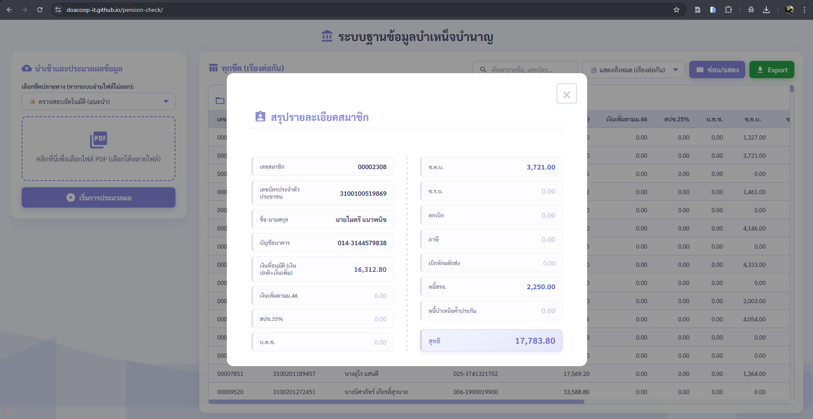

คู่มือการใช้งานระบบ
ระบบฐานข้อมูลบำเหน็จบำนาญ (Pension Management System)
1. การนำเข้าและประมวลผลข้อมูล
ระบบถูกออกแบบมาให้อ่านข้อมูลจากไฟล์ PDF และจัดเรียงเป็นตารางให้โดยอัตโนมัติ โดยมีขั้นตอนดังนี้:

-
ไปที่แถบเมนูด้านซ้าย ในส่วนของ "เลือกชีตปลายทาง" แนะนำให้ปล่อยเป็น ✨ ตรวจสอบอัตโนมัติ (แนะนำ) ระบบจะคัดแยกกรมและประเภทให้เอง
-
คลิกที่กล่องสี่เหลี่ยม "คลิกที่นี่เพื่อเลือกไฟล์ PDF" หรือลากไฟล์ PDF มาวางในกล่อง (สามารถเลือกหลายไฟล์พร้อมกันได้)
-
คลิกปุ่ม ▶ เริ่มการประมวลผล สีน้ำเงิน และรอระบบดำเนินการจนหน้าต่างโหลดเสร็จสิ้น
2. การค้นหาและจัดการตารางข้อมูล
เมื่อนำเข้าข้อมูลเรียบร้อยแล้ว รายชื่อทั้งหมดจะแสดงในพื้นที่แผงควบคุมหลัก (ด้านขวา)

-
การค้นหา: พิมพ์ชื่อ, นามสกุล, เลขบัตรประชาชน หรือเลขสมาชิก ลงในช่อง "ค้นหารายชื่อ, เลขบัตร..." ระบบจะกรองข้อมูลให้ทันที
-
การเปลี่ยนชีต/กรม: คลิกที่เมนู Dropdown (ที่มีค่าเริ่มต้นเป็น "แสดงทั้งหมด") เพื่อสลับไปดูข้อมูลเฉพาะกรม หรือเฉพาะประเภท (บำเหน็จ/บำนาญ) ที่ต้องการ
-
ซ่อน/แสดงคอลัมน์: หากข้อมูลในตารางยาวเกินไป ให้คลิกปุ่ม "ซ่อน/แสดง" สีม่วง เพื่อเลือกปิดคอลัมน์ที่ไม่ต้องการดูได้
-
ดาวน์โหลดข้อมูล (Export): คลิกปุ่ม "Export" สีเขียว ระบบจะดาวน์โหลดข้อมูลที่แสดงอยู่บนหน้าจอออกมาเป็นไฟล์ Excel (.xlsx)
3. การดูสรุปรายละเอียดรายบุคคล (Pop-up)
คุณสามารถดูข้อมูลเชิงลึกและยอดการเงินของสมาชิกแต่ละคนได้อย่างง่ายดายและชัดเจนยิ่งขึ้น


-
นำเมาส์ไปชี้ที่รายชื่อในตาราง (แถวจะเปลี่ยนสีเป็นสีม่วงอ่อน) จากนั้นให้ "คลิก" ที่แถวนั้น
-
ระบบจะเปิดหน้าต่าง Pop-up แสดงข้อมูลทางการเงินทั้งหมดแยกเป็น 2 ฝั่งซ้าย-ขวา เพื่อให้อ่านง่ายและเปรียบเทียบข้อมูลได้สะดวก
-
ยอดสุทธิ: จะถูกจัดวางไว้ที่ตำแหน่งขวาล่างสุดเสมอ พร้อมไฮไลท์แถบสีม่วงเข้มและตัวอักษรขนาดใหญ่ เพื่อให้เห็นยอดรับจริงได้ชัดเจนที่สุด
-
เมื่อต้องการปิดหน้าต่าง ให้คลิกเครื่องหมาย "X" ที่มุมขวาบน หรือคลิกที่พื้นที่ว่างสีเทานอกกรอบสี่เหลี่ยม